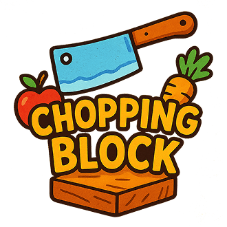

404-Found • Beta Release
The Chopping Block
A Unity-built health equity game designed to help kids learn healthy eating habits through active, rewarding play.
Team
Josh O.
Systems integration, persistence, settings and account flows, audio wiring, and major menu/application updates.
Nigel B.
Core gameplay systems, food unlock logic, debugging, and gameplay-to-game-over improvements.
Kendal H.
Scene work across the beta release, especially Game Over and Classic Tutorial presentation and UI progression.
Mike J.
Business analysis, documentation support, project organization, and QA coordination throughout development.